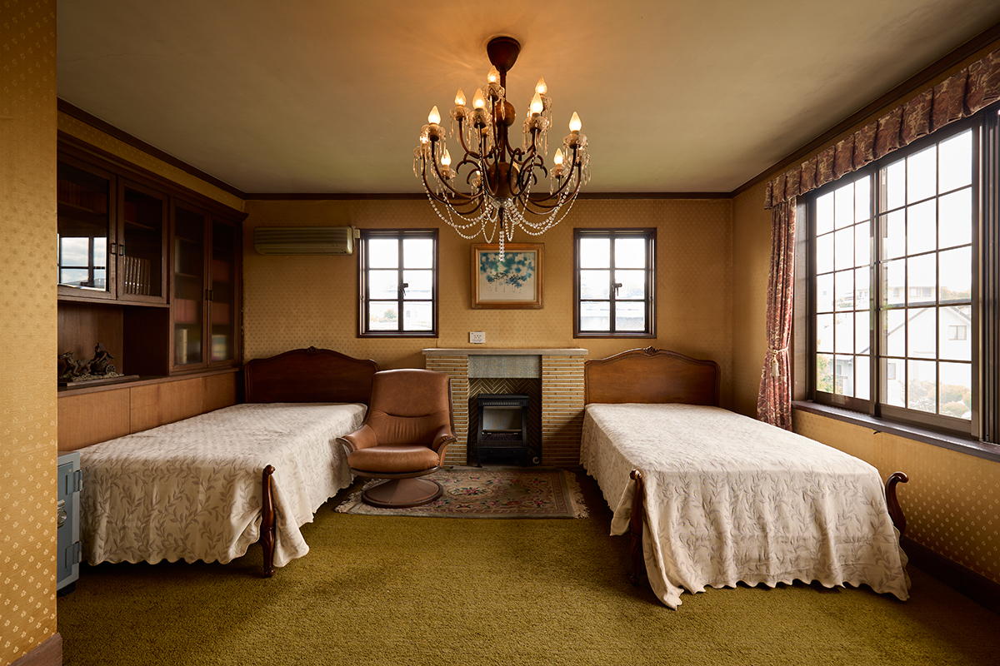
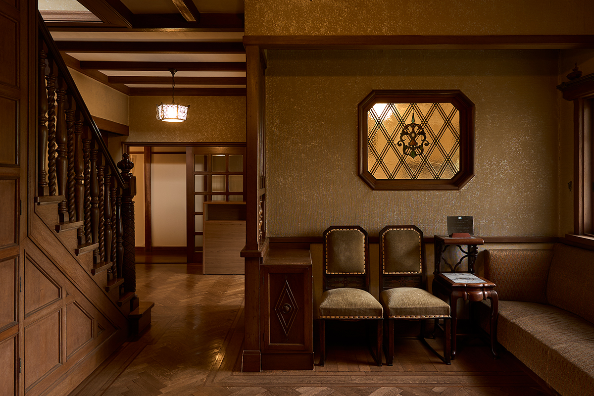
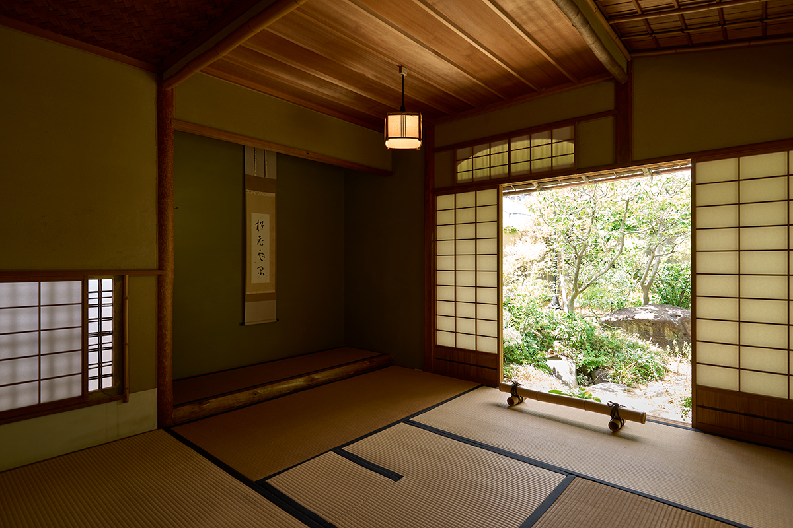

Префектура Хёго · Нисиномия · архитектура
Старый дом семьи Ямамото в Нисиномии: деревянная усадьба между Японией и Европой

На берегу реки Сюкугава в Нисиномии стоит деревянный особняк 1938 года, в котором западные гостиные и японские комнаты с татами соединены в один дом. Сегодня его можно осмотреть по предварительной записи.
Район
Пригород, который построила железная дорога
Между Осакой и Кобе лежит полоса городов, которую японцы называют Хансинкан, буквально «между Осакой и Кобе». С конца XIX века, когда здесь прошла железная дорога, эти места стали пригородом для состоятельных горожан. Железнодорожные компании скупали и застраивали землю, сюда переезжали писатели, художники и предприниматели, и вдоль рек выросли кварталы просторных частных домов.
Один из таких кварталов тянется вдоль реки Сюкугава в Нисиномии. Здесь в 1938 году достроили особняк Дзюитиро Кондо, владельца горнорудного дела. Позже дом несколько раз переходил из рук в руки, и пятым его владельцем стал предприниматель Киёси Ямамото. Именно по его фамилии дом называют теперь «Старым домом семьи Ямамото». Ямамото передал особняк фонду, который носит его имя, и благодаря этому дом открыли для публики.
Фасад
Брёвна на виду
Снаружи дом сразу выдаёт своё дерево. Балки и стойки выведены на фасад, а их поверхность обработана грубо, будто её тесали вручную. Это фахверк, приём европейского деревянного строительства: каркас из балок и столбов остаётся снаружи, а промежутки между ними заполняют кирпичом или штукатуркой. Для загородного дома такой фасад выглядит основательно и в то же время по-домашнему.
Дерево продолжается и внутри. Первое, что видишь, войдя в прихожую, это лестница с резными перилами. Пол в приёмной, которая видна сквозь витражное окно, тоже набран из дерева, и вся отделка сделана с вниманием ремесленника к фактуре материала.

Комнаты не отделены друг от друга жёстко, а плавно перетекают одна в другую. В этом чувствуется современная для 1930-х годов планировка, но и японский дом с его раздвижными перегородками угадывается без труда.
Архитектор
Знаток чайных домиков
Дом спроектировал архитектор Такао Окада. Он учился в Киотском университете у Гоити Такэды (1872–1938), одного из первых японских архитекторов, который принёс в страну новые европейские стили начала XX века. Окада к тому же был известен как исследователь чайных домиков, и это знание заметно во многих деталях усадьбы.

Чайный домик стоит в саду отдельно от дома. Он принадлежит школе Фумай-рю, самурайской чайной традиции, которая сложилась в княжестве Мацуэ. Но подход Окады трудно назвать музейным. Он не опирается на редкие породы дерева или на изысканные намёки, которыми славятся чайные мастера. Его японские интерьеры спокойно уживаются с западными комнатами, где использованы модные в начале эпохи Сёва (с 1926 года) испанский стиль и ар-деко.
На первом этаже ниша токонома и резные фрамуги рамма в японской комнате выдержаны строго и благородно, а внутренний дворик как будто входит в комнату. В западных комнатах второго этажа большие окна впускают много света и воздуха, и на солнце деревянная отделка выглядит особенно свежей.
Планировка
Как устроен дом
От прихожей тянется анфилада западных комнат: приёмная, гостиная для гостей и кабинет. За ними располагаются комнаты с татами. Чайный домик вынесен в сад, а с северной стороны собраны хозяйственные помещения: комната для прислуги, кухня и кладовая.
Сегодня домом управляет фонд Киёси Ямамото. Здесь регулярно проходят чайные церемонии и занятия по каллиграфии, японской живописи и классической литературе. Осмотреть дом можно только по записи, сделанной не позднее чем за день до визита. Вход стоил 300 иен в 2025 году.
Старый дом семьи Ямамото
- Адрес
- префектура Хёго, Нисиномия, Юдзэн-тё, 1-24
- Телефон
- +81 798-73-6677
- Часы работы
- 10:30–15:30 (вход до 15:00)
- Выходные
- воскресенье, понедельник, праздничные дни (а также Обон и новогодние праздники)
- Цены / Вход
- 300 иен, посещение только по записи не позднее чем за день
- Сайт
- yamakiyo.jp
Фото: Марико Тая.